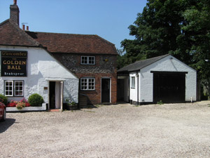

AAN Design & Survey - CV
Andrew French AssocRICS started his surveying career with Bovis Homes. He spent ten years in private practice with a well-known firm of Chartered Surveyors in Henley before a short stint with an architectural practice in Reading.He set up his own firm, specialising in measured surveys and detailed plans for extensions conversions and new builds of residential and commercial buildings in 1990. He has extensive experience in the Building Regulations and Planning procedures.
Tony Verey TD worked in private practice as a surveyor for 18 years involving surveys, design and construction of extensions and new builds.
In 1986 he went on to work for the local brewery initially as their surveyor and subsequently as their property director. He was responsible for the maintenance of the existing stock of buildings, together with the design and construction of all alterations new builds and extensions.
